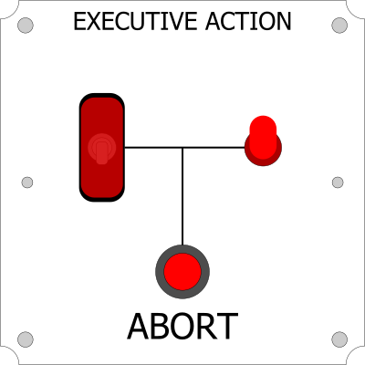
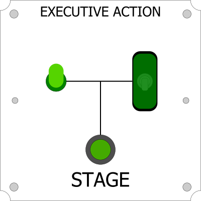
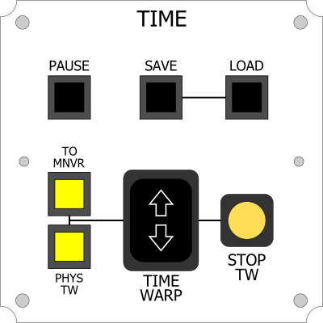
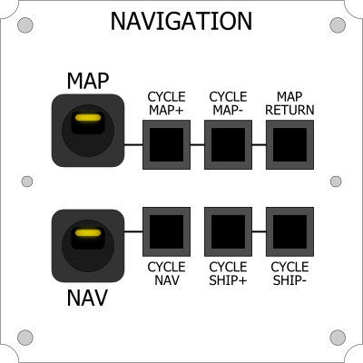
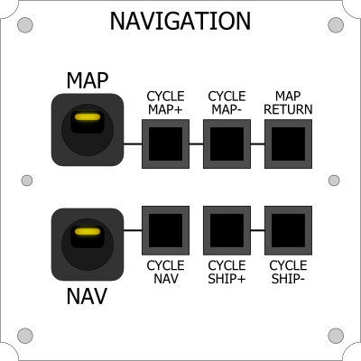
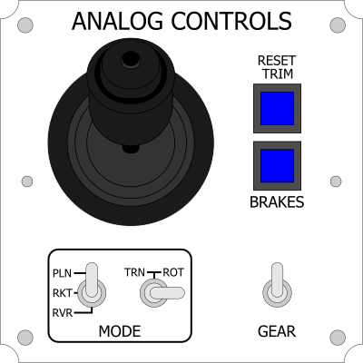
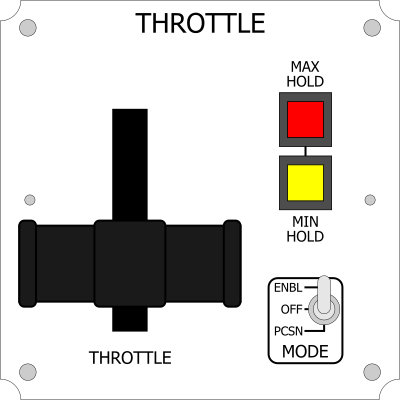

Total: $0
Click a container on the bottom to begin.
To add more than one container, drag the container to a spot on the canvas grid.
To remove a container, drag it to the trash.

Abort Module
$60 The Abort module has a single button, an LED indicator, and an activation safety switch. The button remains inactive unless the safety switch is flipped on. The LED indicates the state of the safety switch. Pressing the button will activate the Abort action group.
$60 The Abort module has a single button, an LED indicator, and an activation safety switch. The button remains inactive unless the safety switch is flipped on. The LED indicates the state of the safety switch. Pressing the button will activate the Abort action group.

Stage Module
$60 The Stage module has a single button, an LED indicator, and an activation safety switch. The button remains inactive unless the safety switch is flipped on. The LED indicates the state of the safety switch. Pressing the button will activate the Stage action group.
$60 The Stage module has a single button, an LED indicator, and an activation safety switch. The button remains inactive unless the safety switch is flipped on. The LED indicates the state of the safety switch. Pressing the button will activate the Stage action group.
 Executive Actions Module
Executive Actions Module
$60 The Executive Actions module combines the functions of the Stage and Abort modules into one. It features two LED indicators (one built into the Abort button) and an arming switch that requires the user to insert and turn a key to activate. The Abort button is covered by a plastic safety cover.
 Executive Actions Module (Groups)
Executive Actions Module (Groups)

$80 The Executive Actions (Groups) module combines the functions of the Executive Actions module with some of the features of the Action Groups module. Two buttons, activated by a safety key switch, control the Stage and Abort groups, with an LED indicator built into the Abort button and covered by a plastic safety cover. Five buttons control the Action Groups, each with an LED indicator. The Action Group mappings can be changed upon request.
Executive Actions Module (Control)
$80 The Executive Actions (Control) module combines the functions of the Executive Actions module with some of the features of the Control Systems module. Two buttons, activated by a safety key switch, control the Stage and Abort groups, with an LED indicator built into the Abort button and covered by a plastic safety cover. Two Action Group buttons with LED indicators control the Gear and Lights action groups, while two switches toggle the SAS and RCS. Another button reactivates the SAS Hold mode for quick refreshing of the SAS.

$80 The Executive Actions (Control) module combines the functions of the Executive Actions module with some of the features of the Control Systems module. Two buttons, activated by a safety key switch, control the Stage and Abort groups, with an LED indicator built into the Abort button and covered by a plastic safety cover. Two Action Group buttons with LED indicators control the Gear and Lights action groups, while two switches toggle the SAS and RCS. Another button reactivates the SAS Hold mode for quick refreshing of the SAS.

Time Module
$80 The Time module manages the timewarp functions of the game. A large rocker switch allows you to step up/down timewarp speeds. A button with an LED indicator lights up if the game is in timewarp, and pressing it will cancel timewarp. Physical timewarp can be activated by holding a button and pressing the large rocker. Another button allows you to warp directly to the next maneuver node. Three more buttons allow you to pause, quicksave, and load the last quicksave. Note: This module is only available for Windows.

$80 The Time module manages the timewarp functions of the game. A large rocker switch allows you to step up/down timewarp speeds. A button with an LED indicator lights up if the game is in timewarp, and pressing it will cancel timewarp. Physical timewarp can be activated by holding a button and pressing the large rocker. Another button allows you to warp directly to the next maneuver node. Three more buttons allow you to pause, quicksave, and load the last quicksave. Note: This module is only available for Windows.
 
Navigation Module

Navigation Module
$70 The Navigation module manages the map and navball. Two large toggle switches activate/decativate the Map/Navball and light up slightly while on. The rest of the buttons allow you to change views while in map mode, change the navball mode (orbit/surface/target) or switch between nearby vessels. Note: This module is only available for Windows.
 Navigation Module (Time)
Navigation Module (Time)
$80 The Navigation (Time) module combines some of the features of the Navigation module and the Time module. A large switch toggles the Map and lights up slightly while on. A large rocker switch allows you to step up/down timewarp speeds. A button with an LED indicator lights up if the game is in timewarp, and pressing it will cancel timewarp. Physical timewarp can be activated by holding a button and pressing the large rocker. Other buttons handle Pause, Cycle Ship, and Reset Map Focus. Note: This module is only available for Windows.
Telemetry Module
$80 The Telemetry module features a large LCD screen that provides a ton of data regarding the status of the current vessel. Four buttons allow the user to select which display mode is currently active. Please note that the large amounts of data being sent to the controller have a tendency to overload controllers that use this module with other display modules (currently Control Systems, Action Groups, and the Stop Timewarp button LED). The buttons on these modules should still work as intended, but the LED indicators might not always update properly.

$80 The Telemetry module features a large LCD screen that provides a ton of data regarding the status of the current vessel. Four buttons allow the user to select which display mode is currently active. Please note that the large amounts of data being sent to the controller have a tendency to overload controllers that use this module with other display modules (currently Control Systems, Action Groups, and the Stop Timewarp button LED). The buttons on these modules should still work as intended, but the LED indicators might not always update properly.
 EVA Module
EVA Module
$80
The EVA module controls Kerbals while on EVA. It provides dedicated inputs for walking/flying, and it includes buttons for the other EVA functions. Parachute deployment can be achieved by pressing both the Jump and Light buttons at the same time. It also features a Monopropellant fuel gauge to show the current fuel level of the kerbal's jetpack. Note: This module is only available for Windows.

 Camera Module
Camera Module
$70 The Camera module allows you to change the view and position of the camera. The white buttons control the camera angle, and the rest of the buttons toggle the UI, take a screenshot, toggle IVA view, and cycle the camera modes. Note: This module is only available for Windows.

Analog Controls Module
$90 The Analog Controls module roughly combines the functionality of the Rotation and Translation Controls modules. It is incompatible with those modules. It features a large 3-axis joystick that controls the pitch/yaw/roll or the x/y/z impulse of the craft depending on the state of a Mode toggle switch. Another Mode switch remaps the joystick control depending on the craft for more intuitive gameplay. The joystick button sets the trim, and the brakes can be held with the button. The brakes can also be locked on by pressing the brake button and then pressing the joystick button. Another toggle switch controls the Gear action group.
$90 The Analog Controls module roughly combines the functionality of the Rotation and Translation Controls modules. It is incompatible with those modules. It features a large 3-axis joystick that controls the pitch/yaw/roll or the x/y/z impulse of the craft depending on the state of a Mode toggle switch. Another Mode switch remaps the joystick control depending on the craft for more intuitive gameplay. The joystick button sets the trim, and the brakes can be held with the button. The brakes can also be locked on by pressing the brake button and then pressing the joystick button. Another toggle switch controls the Gear action group.
 Analog Controls Module (Throttle)
Analog Controls Module (Throttle)
$90 The Analog Controls module (Throttle) roughly combines the functionality of the Rotation and Translation Controls modules and Throttle module. It is incompatible with those modules. It features a large 3-axis joystick that controls the pitch/yaw/roll or the x/y/z impulse of the craft depending on the state of a Mode toggle switch. Another Mode switch remaps the joystick control depending on the craft for more intuitive gameplay. A dial controls the throttle. The joystick button sets the trim, and the brakes can be held with the button. The brakes can also be locked on by pressing the brake button and then pressing the joystick button.
Rotation Controls Module
$90 The Rotation Controls module is intended to be used together with the Translation Controls module. It features a large 3-axis joystick that controls the pitch/yaw/roll of the craft. A mode switch remaps the axes depending on the type of craft to lead to more intuitive gameplay. The joystick button and trim button allow you to set the trim per axis. Two other switches toggle the Light and Gear action groups.
$90 The Rotation Controls module is intended to be used together with the Translation Controls module. It features a large 3-axis joystick that controls the pitch/yaw/roll of the craft. A mode switch remaps the axes depending on the type of craft to lead to more intuitive gameplay. The joystick button and trim button allow you to set the trim per axis. Two other switches toggle the Light and Gear action groups.
 Rotation Controls Module (Throttle)
Rotation Controls Module (Throttle)
$90 The Rotation Controls (Throttle) module is intended to be used together with the Translation Controls module. It features a large 3-axis joystick that controls the pitch/yaw/roll of the craft. A mode switch remaps the axes depending on the type of craft to lead to more intuitive gameplay. The joystick button and trim button allow you to set the trim per axis. It also features a dial for controlling the throttle, with an enable switch for quick on/off or for safety.
$90 The Translation Controls module is intended to be used together with the Rotation Controls module. It features a large 3-axis joystick that controls the x/y/z impulse of the craft, such as during docking. It also controls the wheels while in Rover mode. Also while in Rover mode, a cruise control function allows you to set a speed for the craft to maintain. Brakes and Brake Lock inputs allow you to press and hold or toggle on/off the brakes respectively. A toggle switch for Precision Control reduces the translation and rotation inputs by 80%, allowing you to more accurately insert into an orbit.

Throttle Module
$60 The Throttle module features a large rotating lever that smoothly controls the throttle. It also includes a toggle switch for enabling/disabling the throttle or choosing a throttle-specific precision mode, as well as buttons for quick max/min throttle.
$60 The Throttle module features a large rotating lever that smoothly controls the throttle. It also includes a toggle switch for enabling/disabling the throttle or choosing a throttle-specific precision mode, as well as buttons for quick max/min throttle.
Control Systems Module
$90 The Control Systems module manages the SAS and RCS of the ship. Two toggle switches activate the SAS and RCS, and 10 buttons, each with an LED indicator, select the active SAS mode. The buttons come with stickers to denote which mode they activate.
$90 The Control Systems module manages the SAS and RCS of the ship. Two toggle switches activate the SAS and RCS, and 10 buttons, each with an LED indicator, select the active SAS mode. The buttons come with stickers to denote which mode they activate.
 Action Groups Module
Action Groups Module
$90 The Action Groups module consists of 10 pushbuttons, each with an LED indicator. The buttons activate Action Groups 1-10, and the LED indicators determine the states of the action groups. When switching between different crafts, the indicators will change depending on that craft's specific active action groups. The empty space in the center leaves room for stickers or can be drawn on with a dry-erase marker for labeling.
 Action Groups Module (11-20)
Action Groups Module (11-20)
$90 The Action Groups (11-20) module consists of 10 pushbuttons, each with an LED indicator. The buttons activate Action Groups 11-20, and the LED indicators determine the states of the action groups. When switching between different crafts, the indicators will change depending on that craft's specific active action groups, though there are some bugs when switching between craft that do not have anything mapped to Groups 11-20. The empty space in the center leaves room for stickers or can be drawn on with a dry-erase marker for labeling.
Action Groups Module (21-30)
$90 The Action Groups (21-30) module consists of 10 pushbuttons, each with an LED indicator. The buttons activate Action Groups 21-30, and the LED indicators determine the states of the action groups. When switching between different crafts, the indicators will change depending on that craft's specific active action groups, though there are some bugs when switching between craft that do not have anything mapped to Groups 21-30. The empty space in the center leaves room for stickers or can be drawn on with a dry-erase marker for labeling.

$90 The Action Groups (21-30) module consists of 10 pushbuttons, each with an LED indicator. The buttons activate Action Groups 21-30, and the LED indicators determine the states of the action groups. When switching between different crafts, the indicators will change depending on that craft's specific active action groups, though there are some bugs when switching between craft that do not have anything mapped to Groups 21-30. The empty space in the center leaves room for stickers or can be drawn on with a dry-erase marker for labeling.